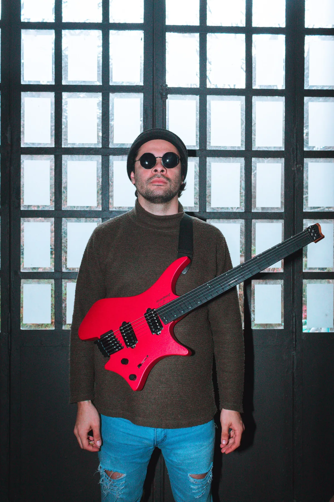
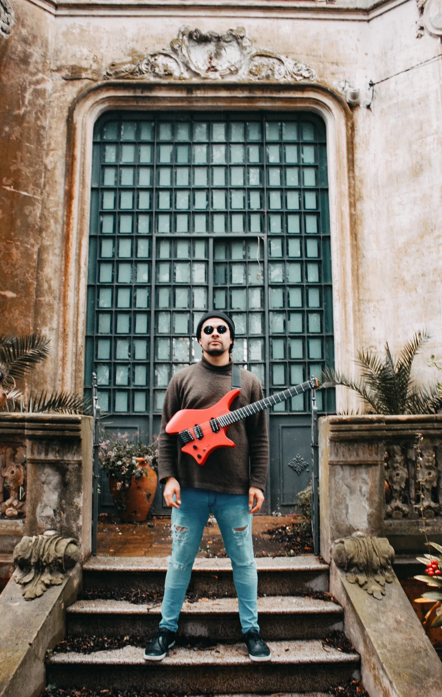
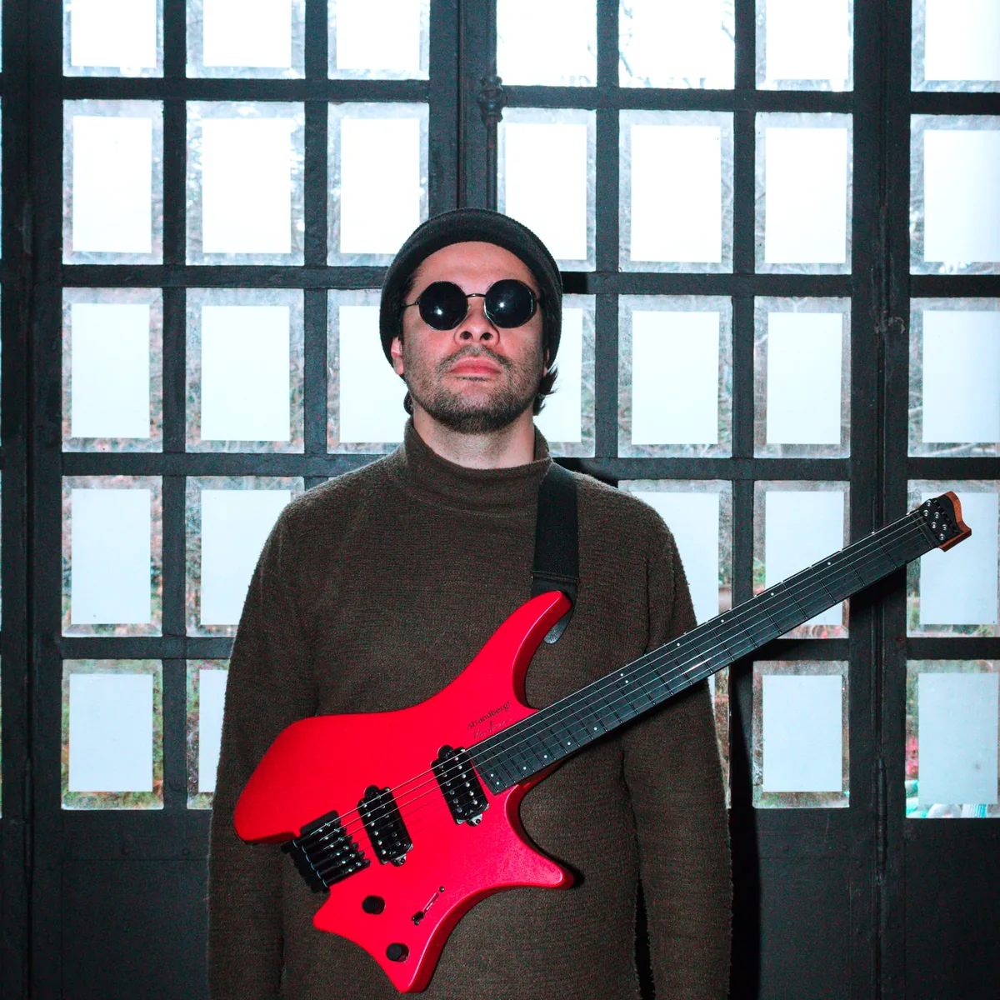

2026
Un latido
Balada instrumental grabada en Colón. Guitarra, silencio y tiempo detenido.
Abrir proyecto →
Single — 2026

Un latido
Un latido nació como una canción sin palabras. Grabada íntegramente en Colón, con mi Strandberg Boden roja — el color que atraviesa el lenguaje visual de este sitio.
El video fue filmado en una mansión de la ciudad. Luz natural, madera, silencio y tiempo detenido. Quería que la imagen respirara igual que la música.
No hay apuro. Es música instrumental para escuchar con calma.

El reproductor se conecta directamente a Spotify: cuando se publique el single, aparece acá sin tocar nada más.
Obra
Balada instrumental grabada en Colón. Guitarra, silencio y tiempo detenido.
Abrir proyecto →Registro del proceso de grabación en la mansión. Luz natural y madera.
Abrir proyecto →Estudio
Un espacio abierto para trabajar, grabar y colaborar. Sin apuro, sin vidriera.
Acá hay instrumentos reales: guitarras, bajo, equipos, computadoras y cosas con historia. No es un local comercial; es un lugar donde la música pasa primero.
El enfoque es simple: hacer sonar bien lo que haya para decir. Si tenés una canción, una idea o ganas de venir a tocar, charlamos.
Colón, Buenos Aires · Visitas con cita previa